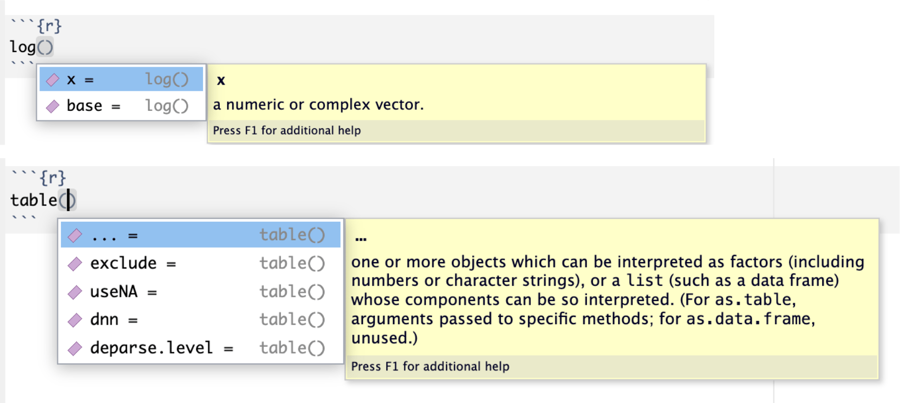

sqrt(225) [1] 15As funções são a base de uma linguagem de programação. Assim como uma função matemática, na computação uma função recebe um conjunto de dados, processa esses dados e retorna um resultado. Os dados inseridos numa função são chamados de argumentos da função. Os resultados da função são chamados de output da função. E geralmente usamos o revor retornar para nos referirmos ao output da função, os resultados da função.
O R possui diversas funções prontas para serem usadas, mas também permite que você crie suas próprias funções. Isso será útil quando uma determinada análise tem de ser feita diversas vezes, evitando que você precise reescrever o código dessa análise toda vez que tiver de fazê-la novamente.
Já vimos em capítulos anteriores algumas funções como str(x), que retorna a estrutura do objeto x; a funcção c(), que combina os objetos num vetor; e algumas funções matemáticas como mean(), median(), sd() que retornam a média, a mediana e o desvio padrão de um conjunto de dados numéricos. Todos dados inseridos numa função são denominados argumentos da função.
Uma função pode receber como input (argumento) um valor numérico e dar como resultado o dobro desse valor. Uma outra função recebe como input um valor numérico e dá como resultado o seno desse valor. Outra função recebe um valor numérico e dá como resultado a raiz quadrada desse valor, etc.
Vejamos um exemplo simples de como extrair a raiz quadrada de um número no R. O nome da função é sqrt(), é uma abreviação de square root, ou raiz quadrada. Inserimos na função o número cuja raiz quadrada desejamos saber. Esse valor é o argumento dessa função. Portanto, para obter a raiz quadrada de basta usar a função sqrt() com o valor desejado.
sqrt(225) [1] 15Em computação, as funções podem receber mais do que apenas valores numéricos. Podem receber tanto números quanto quaisquer outros objetos e informações para saber como se comportar e o que fazer. Tudo que é inserido numa função para que seja executada alguma operação é chamado de argumento da função.
Existem dois tipos de argumentos de função:
A função mean() é um exemplo de função que possui argumentos de dados e argumentos de controle. Os argumentos de dados são os valores numéricos que serão usados para calcular a média. Os argumentos de controle são os argumentos que controlam o comportamento da função, como por exemplo, o argumento na.rm que indica se a função deve remover ou não os valores faltantes.
x <- c(1,2,3,4,NA)
mean(x, na.rm = TRUE) # na.rm=TRUE é um argumento de controle[1] 2.5Os argumentos de uma função são os parâmetros sobre os quais a função realiza alguma operação. Por exemplo, na função \(f(x)=sen(x)\), \(x\) é o argumento da função. A operação de calcular o seno será realizada sobre o valor de \(x\). Da mesma forma, nas funções \(f(x)=\sqrt{x}\), \(f(x)=2x\), e \(f(x)=x^2\), \(x\) é o argumento das funções.
Algumas funções possuem mais de um argumento, tal como a função logarítmica \(f(x,b)=\log _{b} (x)\). Para calcularmos o logaritmo de \(x\) na base \(b\) , precisamos informar à função o valor de \(x\) e de \(b\). Então \(x\) e \(b\) são os argumentos da função \(f(x,b)=\log _{b} (x)\).
Esse é um exemplo de função que precisa de dois argumentos para ser executada. No R a função para calcular o logaritmo de nra base seria escrita da seguinte maneira:
log(2,10)[1] 0.30103Toda função no R tem a seguinte estrutura: nome(argumento, argumento, argumento, …). Ou seja, o nome da função, seguido dos argumentos da função entre parênteses. Observe que não há espaços entre o nome da função e os parênteses com os argumentos. Os argumentos, por sua vez, são separados por vírgulas. A inserção dos argumentos numa função pode ser feito de duas maneiras:
-Pela ordem
-Pelo nome do argumento
A função logaritmo interpreta o primeiro o valor como sendo \(x\) e o segundo valor como sendo a base \(b\). Mas podemos escrever essa função explicitando cada argumento individualmente. Essa forma de escrever, embora mais longa, deixa a função mais compreensiva para o leitor. Além disso, quando inserimos os argumentos pelo nome, a ordem não importa, pois já estamos indicando ao R o significado de cada argumento.
Veja abaixo as diferentes formas de inserir os argumentos numa função no R.
# inserindo os argumentos pela ordem
log(2,10) [1] 0.30103# inserindo os argumentos pelo nome
log(x = 2, base = 10) [1] 0.30103Além disso, para facilitar o uso, muitas funções no R já tem argumentos padronizados, default. Ou seja, caso não sejam informados, o R irá usar o valor padrão desses argumentos. A função logaritmo no R tem como padrão o logaritmo natural, a base \(e\). Então, se a base não for inserida como argumento, o R interpretará que deverá ser usado o valor padrão. Veja abaixo o exemplo, para calcular o logaritmo natural de 10 - \(log _{e} (10)\) - simplesmente digitamos no R:
# usando a o argumento default (padrão) da função logaritmo no R
# será calculado o logaritmo natural (base e) de 10
log(10)[1] 2.302585Podemos verificar alguns dos argumentos possíveis de serem passados para uma função digitando a tecla tab quando o cursor estiver dentro da função. Quando clicamos a tecla tab o RStudio abre um menu contextual com os mais importantes argumentos da função. Veja nas imagens abaixo alguns exemplos.

O R permite que você crie também suas próprias funções. Isso será útil quando uma determinada análise tem de ser feita diversas vezes, evitando que você precise reescrever o código dessa análise toda vez que tiver de fazê-la novamente.
Para criar uma função precisamos: 1. Dar um nome para a função a ser criada. 2. Definir os argumentos da função. 3. Definir o que a função irá retornar, seu ouput.
Suponha que você tenha em seu banco de dados a altura e o peso dos pacientes e necessite calcular o imc (índice de massa corporal). Podemos facilmente criar uma função que recebe os valores do peso e da altura como argumentos, calcula o IMC e retorna esse valor. O termo retornar é usualmente usado para se referir ao objeto que a função devolve depois de receber seus argumentos.
Então:
1. O nome da função será: imc.
2. Os argumentos da função serão: peso e altura.
3. A função calcular e retornar um valor numérico.
Com essas informações, basta colocar tudo isso na função.
imc <- function(peso, altura)
{
return(peso/(altura*altura))
}A primeira linha acima indica que estamos criando uma função chamada imc que recebe dois argumentos: peso e altura.
As linhas entre os {} realizam o cálculo do imc, que é o peso dividido pela altura ao quadrado.
O comando return() é usado para indicar o que a função irá retornar.
Para usar essa função, basta inserir os argumentos peso e altura na própria função
imc(peso = 64, altura = 1.75)[1] 20.89796As funções que criamos com o comando function() acima todas tiveram um nome. Entretanto, o R também permite criar funções anônimas, ou seja, sem nome. Elas também são criadas com o comando function() e são usadas para realizar operações simples e rápidas, quando não há necessidade de reutilizar a função novamente. Funções anônimas são frequentemente utilizadas em conjunto com funções da família apply, como lapply, sapply, que aplicam uma função (anônima) a cada elemento de uma lista ou vetor. Essa combinação permite transformar e processar dados de maneira eficiente e elegante, tornando-as uma ferramenta poderosa para a manipulação e análise de dados em R.
Entretanto, as funções da família apply são bastante sofisticdas, e estão além do escopo desse livro de introdução ao R. Para mais informações sobre essas funções, consulte a documentação do R ou o livro R for Data Science de Hadley Wickham e Garrett Grolemund.